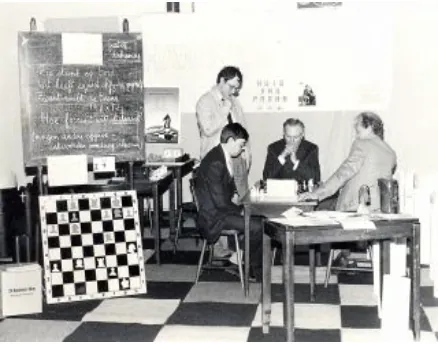
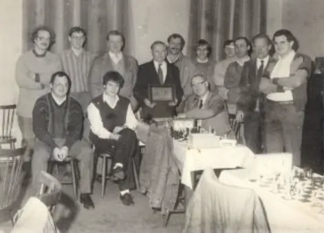
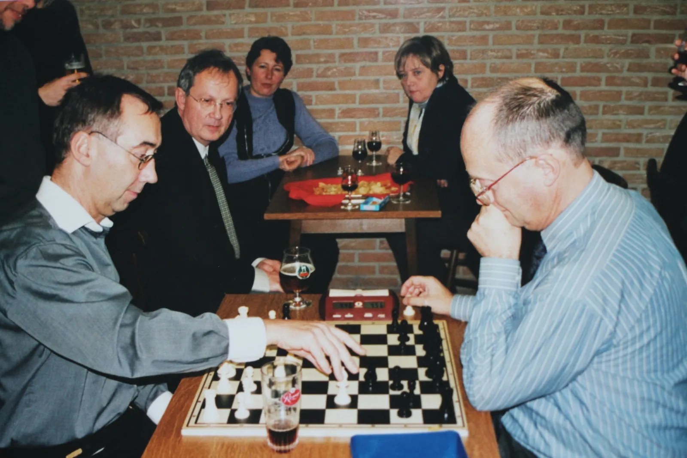
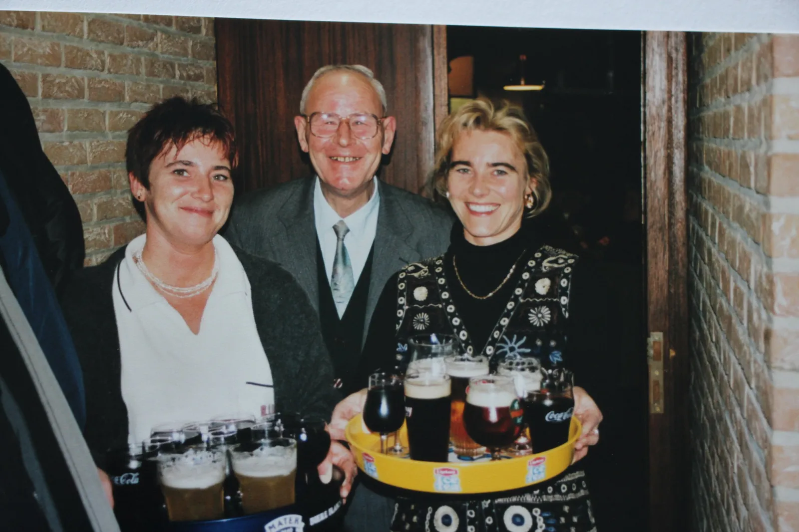
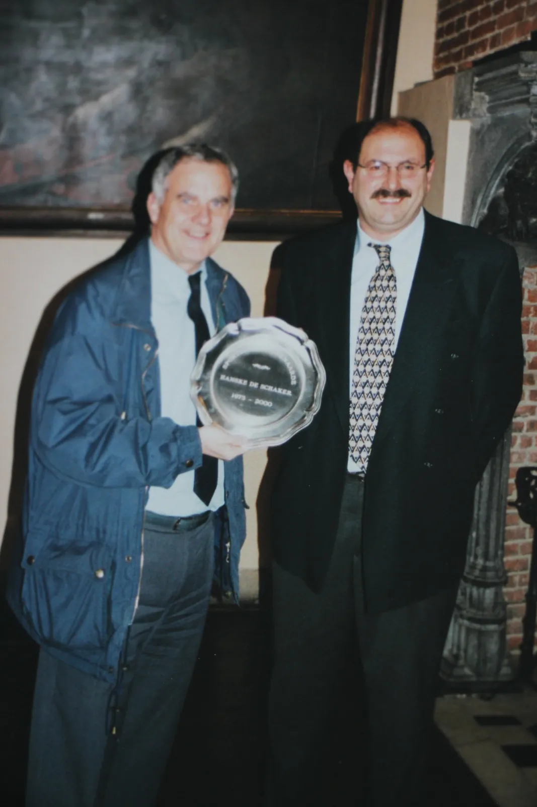
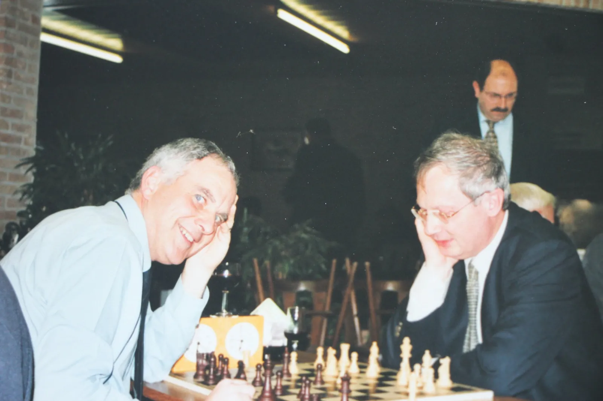

Schaakclub Hanske De Schaker zag het daglicht op 22 november 1975. Op die dag kwamen de drie stichtende leden Jacques Bruynooghe, Paul De Bruyne en René Vandenbroecke samen in het 'Huis van Parma'.

Schaakclub Hanske De Schaker zag het daglicht op 22 november 1975. Op die dag kwamen de drie stichtende leden Jacques Bruynooghe, Paul De Bruyne en René Vandenbroecke samen in het 'Huis van Parma'.

Hanske De Schaker wandelde door vele café's in Oudenaarde en groeide keer op keer. Na vele omzwervingen werd uiteindelijk gestopt bij café 't Parkske waar de volkse sfeer van Hanske De Schaker volledig tot zijn recht komt. Dit zaaltje biedt plaats aan de vrijdagse schaakavonden en aan de interclub momenten.
Tegenwoordig vinden de avonden plaats ter Abdij Maagdendale, Oudenaarde.

Door de jaren heen hebben heel wat leden hun stempel gedrukt op Hanske De Schaker. Namen als Jacques Bruynooghe, Paul De Bruyne en Werner Verschelde zijn dan ook onlosmakelijk verbonden met de geschiedenis van de club.
De viering van 25 jaar Hanske De Schaker was een mooie gelegenheid om even stil te staan bij de rijke geschiedenis van de club. Toenmalig voorzitter Willy Vandamme gaf er de voorzittersfakkel door aan Werner Verschelde.
Ook aan gezelligheid was er doorheen de jaren geen gebrek. Paul De Bruyne, één van de oprichters van de club, wist naast het schaken duidelijk ook te genieten van de sfeer in café 't Parkske.
Aan het schaakbord werd er natuurlijk altijd op het scherpst van de snee gespeeld. Zo namen de broers Jacques en Jean-Pierre Bruynooghe het geregeld tegen elkaar op. Ook Werner Verschelde kende zijn moeilijke momenten aan het bord, onder meer in een partij tegen Wilfried Coelus.
Het zijn deze mensen, hun verhalen en vele mooie momenten die mee het gezicht en de geschiedenis van Hanske De Schaker hebben bepaald.




Doorheen de jaren werd er bij Hanske De Schaker uiteraard niet alleen gezellig geschaakt, maar ook gestreden om de titel van clubkampioen. Hieronder een overzicht van de schakers die zich door de jaren heen tot clubkampioen van Hanske De Schaker mochten kronen.